인게임 관련 재화의 획득처,사용처입니다
(굵은 단어는 주 사용처,획득처,
얅은 글씨는 부 사용처,획득처 입니다)
순서
1. 쥬얼
2. 크레딧
3. 배틀데이터
4. 코어 더스트
5. 고급 모집 티켓
6. 일반 모집 티켓
7. 골드 마일리지 티켓
8. 실버 마일리지 티켓
9. 스킬 매뉴얼 칩
10. 유니온 칩&큐브 배터리
11. 아레나 경품 교환권
12. 바디 라벨
13. 부서진 코어
14. 소셜 포인트
15. 모듈 부스트
16. 소장품&소장품 관리 키트
17. 커스텀 모듈
1. 쥬얼
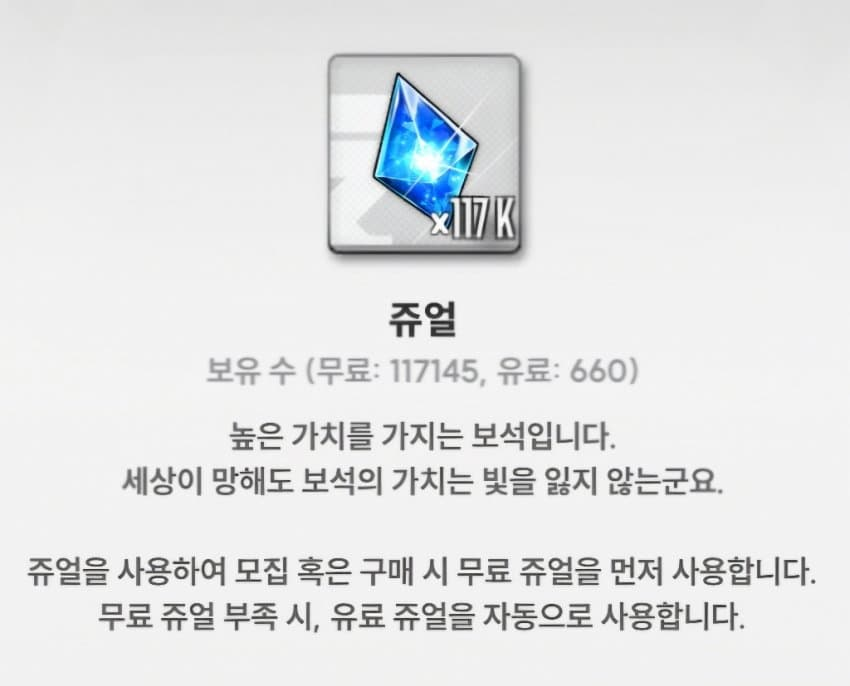
사용처 : 픽업,일뽑(150쥬얼),이벤트 상점,전초기지리롤,파견리롤...등등
획득처 : 일일퀘스트,주간퀘스트,캠페인,트라이브 타워,
파견,아레나 보상,솔로 레이드 보상... 등등
픽업과 인게임 여러 부분에서 쓰이니 모을 수 있는한
최대한 모으는게 좋음
참고로 160벽을 못 뚫은 뉴비면 150쥬얼 일뽑에는
가끔 써도 되지만, 160을 뚫었거나 일뽑 10회에는
절대 쥬얼 쓰지않는게 좋음. 일뽑은 일뽑 티켓만 쓰자
2. 크레딧
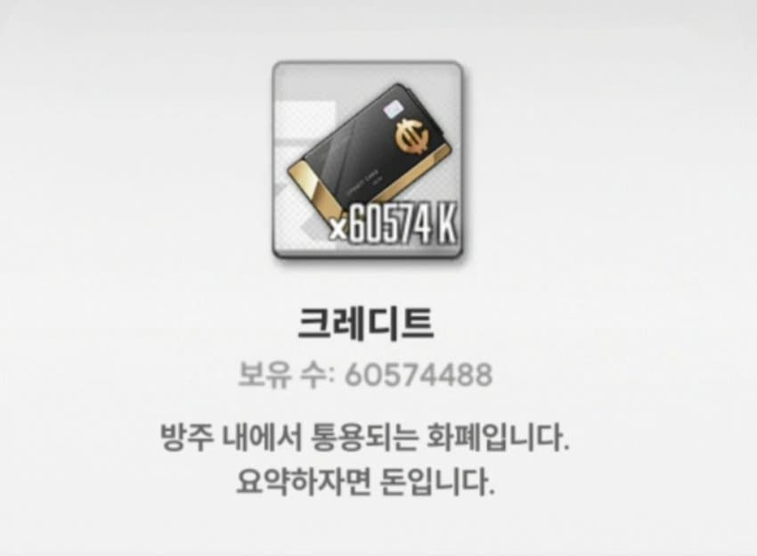
사용처 : 니케 레벨업,장비강화,상점... 등등
획득처 : 전초기지 보상,캠페인,이벤트,트라이브 타워... 등등
인겜에서 니케들을 강화하는데 사실상 젤 많이 쓰이고
중요한 재화이며, 200렙 중후반부터 모자라져서 니케들
레벨업이나 장비강화를 못하는 일들이 흔히 벌어지기에
쥬얼,코더,티켓,스킬칩과 같이 꾸준히 모아야하는 재화
3. 배틀데이터(배뎃)
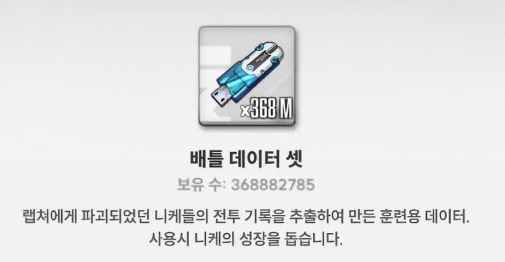
사용처 : 니케 레벌업
획득처 : 전초기지 보상
니케들 레벌업에 쓰이는 주재료 중 하나로
니케들 80~200렙까지는 부족할 수 있으나 200렙 이후부터는
자연스럽게 쌓이기 때문에 너무 모을 필요는 없으나
꾸준히 모아야 하는것은 마찬가지인 재화
4. 코어더스트(코더)
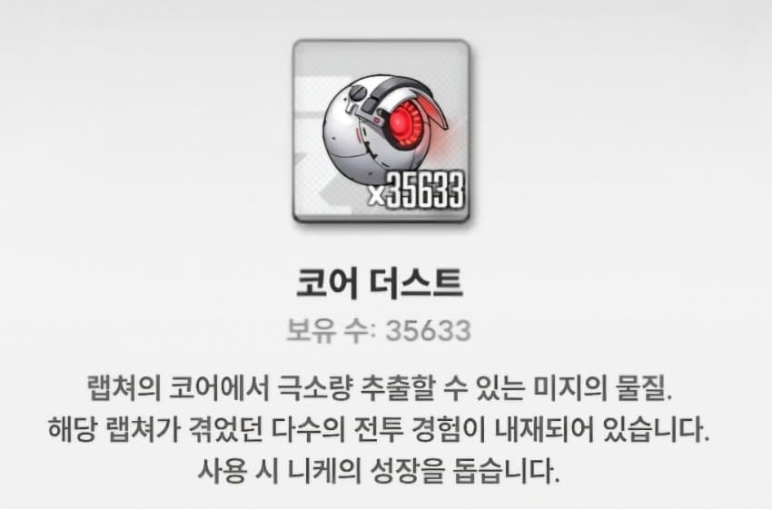
사용처 : 니케 레벌업
획득처 : 전초기지 보상,이벤트,캠페인,트라이브 타워... 등
니케 레벨업에 제일 핵심이 되는 재화이며,
흔히 코더라고 부르고 가장 획득량이 적은 재화이다
200렙 이후부터는 니케들 1레벨업 하는데
무려 10000코더가 필요하고 그 이후 조금씩 늘어나니
초반부터 계속 꾸준히 모아두길
5. 고급 모집 티켓(특뽑)
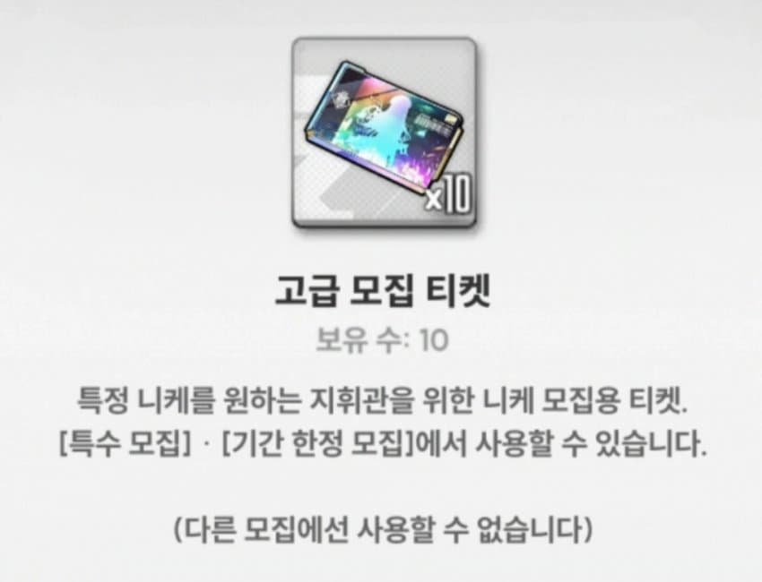
사용처 : 픽업
획득처 : 이벤트 상점,사료,현질
쥬얼과 함께 픽업에 쓰이는 주 재화로
매우 중요하기에 꾸준히 모으고,신중히 사용해야한다
6. 일반 모집 티켓(일뽑)
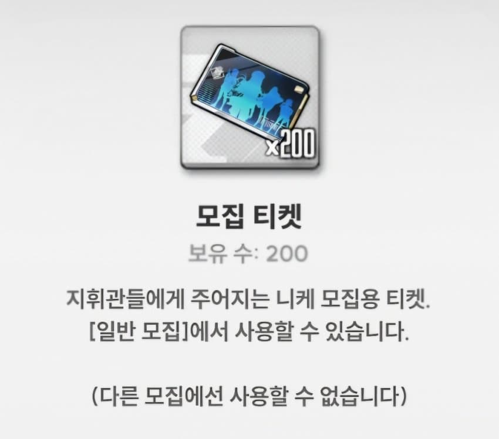
사용처 : 일반 픽업(통상)
획득처 : 이벤트 상점,주간퀘스트,업적,이벤트 챌린지 등
일반 니케 모집에 사용되는 티켓
7. 골드 마일리지 티켓(골마,골티 등)
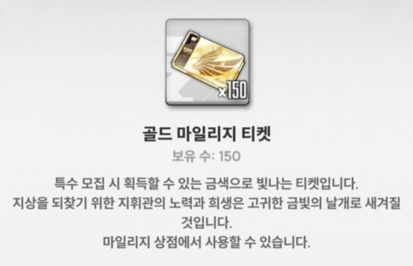
사용처 : 픽업 니케 명함,돌파
획득처 : 픽업 모집 수 만큼(통상X)
픽업 모집 중인 니케의 명함을 한번에 얻을 수 있게 해주는
재화로 골마 200개로 다른 픽업 재화(쥬얼,골마)를
사용하지 않고 픽업 니케의 명함이나 돌파를 한번에
할 때 사용한다. 마일리지 상점에서 사용가능하며
신중하게 사용하는것이 좋다.
(가끔 대참사가 발생하기에...)
8. 실버 마일리지 티켓(실마)
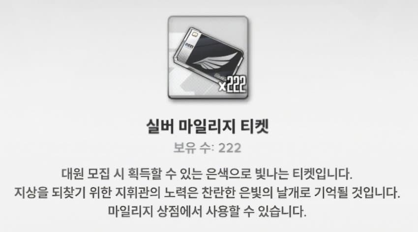
사용처 : 통상 니케 돌파
획득처 : 일반 니케 모집 수 만큼
일반 니케들의 돌파를 한번에 하도록 해주는 재화
주의할 점 은 골마와 달리 명함은 얻을 수 없다는 부분
9. 스킬 매뉴얼(스킬칩)
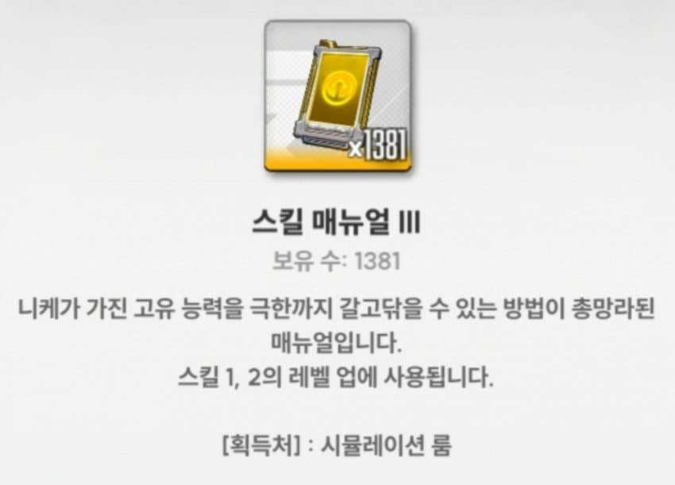
사용처 : 니케 스킬 레벌업
획득처 : 시뮬레이션 룸,이벤트 보상,이벤트 상점
니케들 스킬 레벨업에 쓰이는 재화로
재화 요구량에 비해 획득량이 터무니없이 적으니
꾸준히 모아야 한다.
10. 유니온 칩
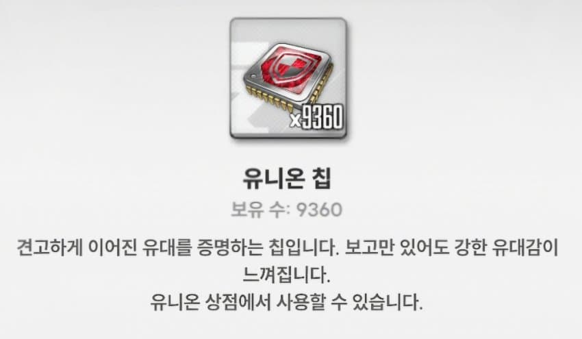
사용처 : 큐브 배터리 구매
획득처 : 유니온 레이드 보상
니케들 전투력을 강화하는데 쓰이는 큐브 배터리를
구매하는데 쓰이는 유일한 재화로 이 이유 하나 때문에
유니온에 필수로 가입하고 유니온 레이드에
꾸준히 참가해야한다. 추가로 아래 사진이 큐브 배터리
10 - (1). 큐브 배터리
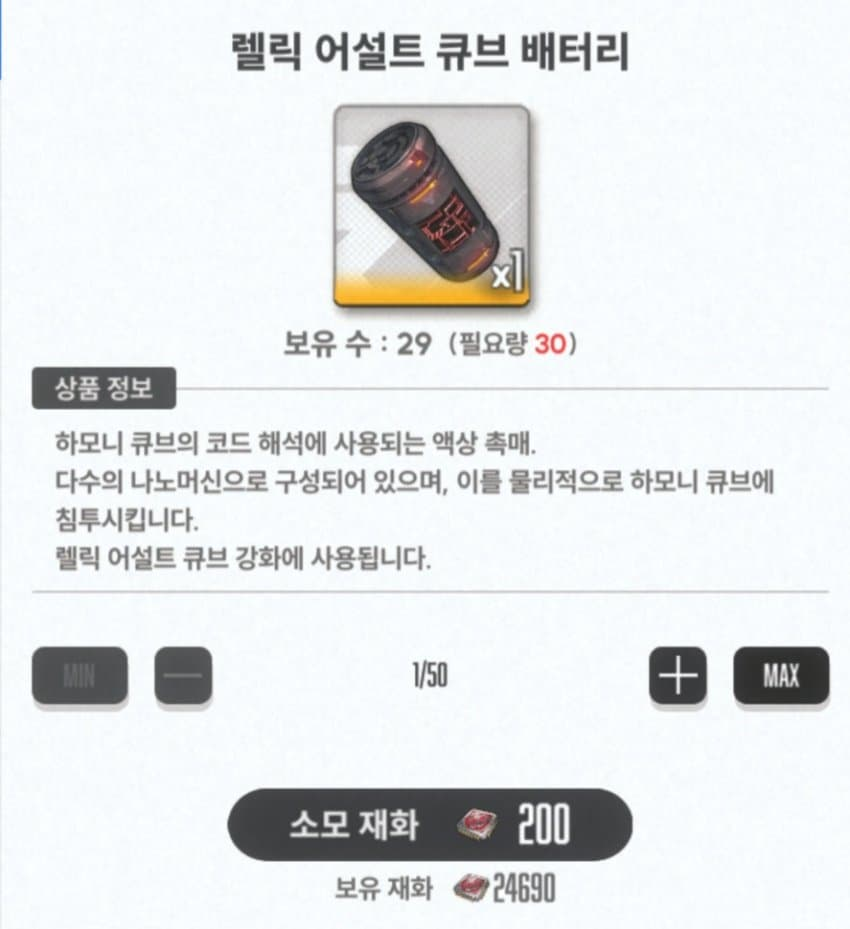
11. 아레나 경품 교환권
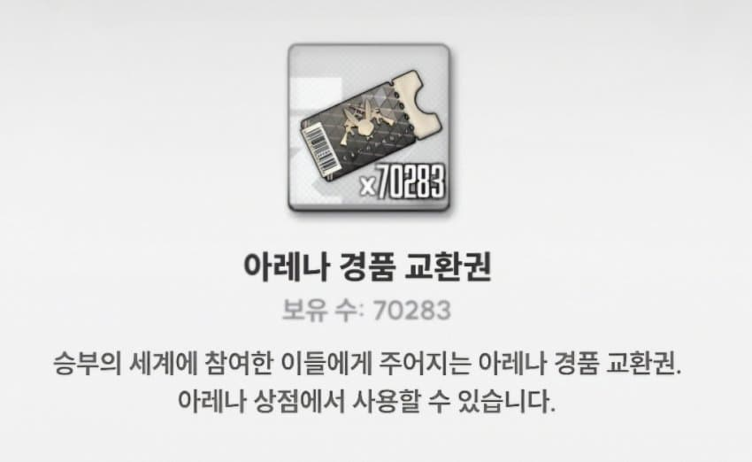
사용처 : 니케 우월코드 스킬칩 구매
획득처 : 아레나 보상
상점에서 우월코드 스킬칩을 구매하는데 쓰이는 재화
많을수록 좋지만, 쌓이는 경우는 거의 드물다
12. 바디 라벨
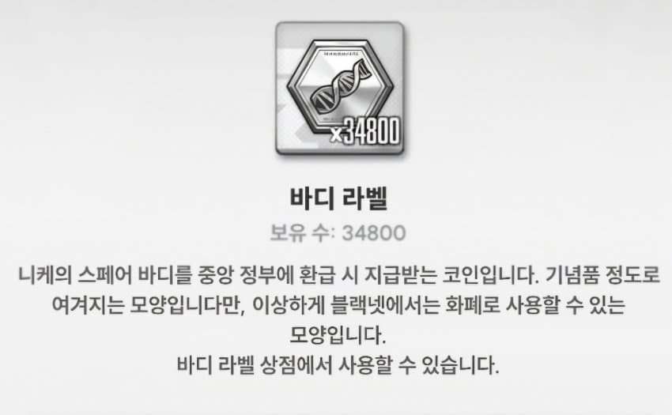
사용처 : 콘솔,몰드 등
획득처 : 풀코 니케 획득시 일정량만큼 획득
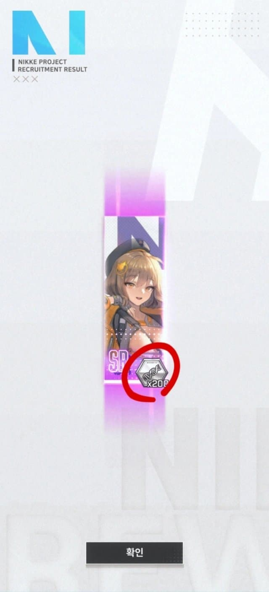
13. 부서진 코어
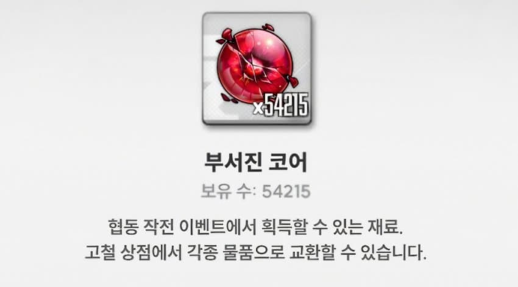
사용처 : 상점에서 호감 아이템,여러 재화 등
획득처 : 협동작전
상점에서 니케들 호감 아이템 또는 코더상자나 크레딧상자
등 여러가지 물건들을 사는데 사용된다.
14. 소셜 포인트
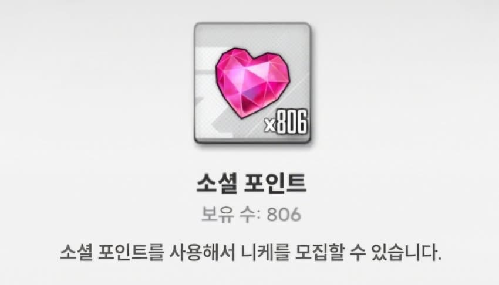
사용처 : 인연 뽑기
획득처 : 친추 하트
친추 하트 꼬박꼬박 보내
15. 모듈 부스트
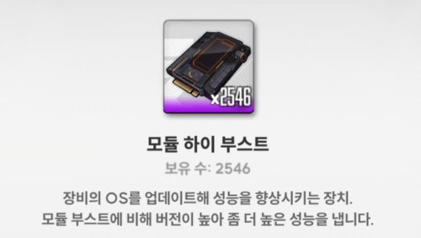
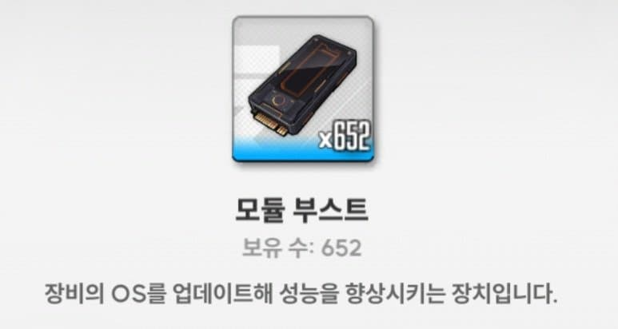
사용처 : 장비 강화
획득처 : 특수 요격전,전초기지 보상 ... 등
니케들 장비 강화에 사용되는 재화
16. 소장품
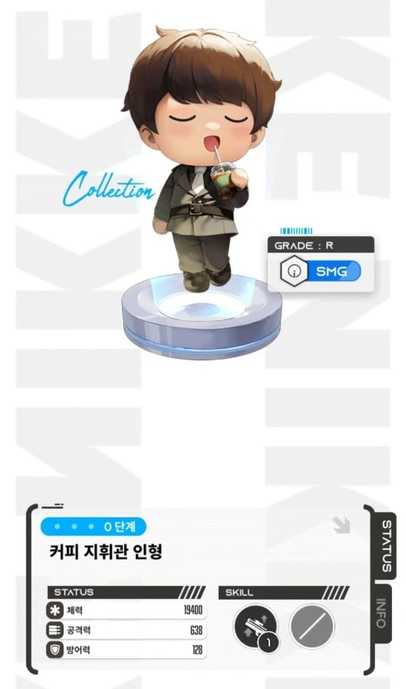
16-(1). 소장품 관리키트
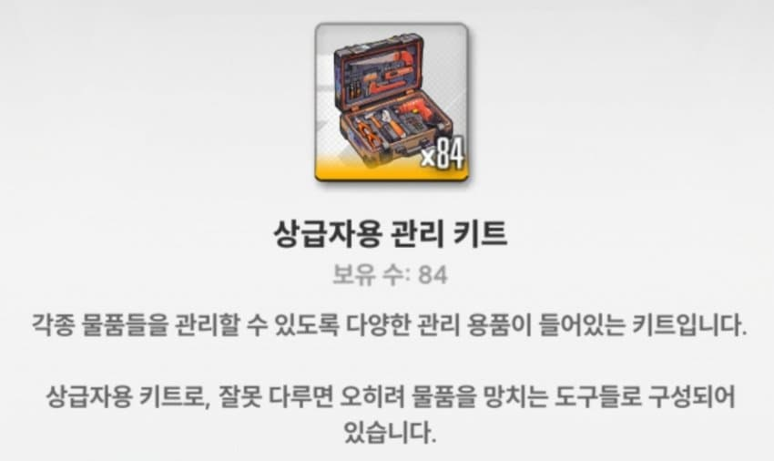
사용처 : 니케들 전투력 강화,소장품 강화
획득처 : 전초기지 보상,솔로 레이드
위에서 앞서 설명한 큐브와 비슷하게
니케들 전투력을 크게 향상시켜주는데 쓰이는
중요한 재화로 쓰다보면 부족하기에
솔레를 7단계까지 깰 수 있는 한, 최대한 깨는것이 좋다
17. 커스텀 모듈(모듈)
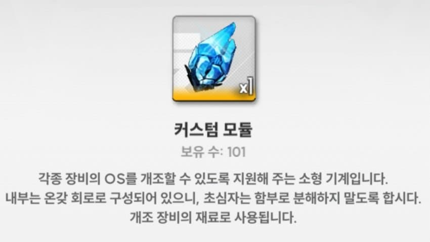
사용처 : 니케 장비 오버로드 강화,오버로드 옵션 변경
획득처 : 특수 요격전...
니케들의 전투력을 크게 강화시켜주는
오버로드 장비를 만들거나 오버로드 장비의 옵션을
변경할 때 필수로 사용되는 재화로 막 사용하다간
순식간에 증발하니 사용시 조심하자